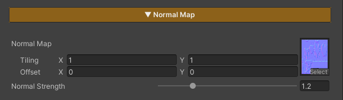
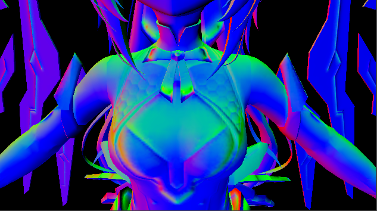

Normal Map
NormalMap_Off
NormalMap_On
NormalMap_Off
NormalMap_On

This section is used to control the character’s Normal Map settings, adding more surface detail and improving the appearance of lighting and shadows.
Parameters
- Normal Strength : Controls the intensity of the Normal Map and how strongly it affects the surface details
Preview NormalMap Pass

last_modified_at: %Y->-